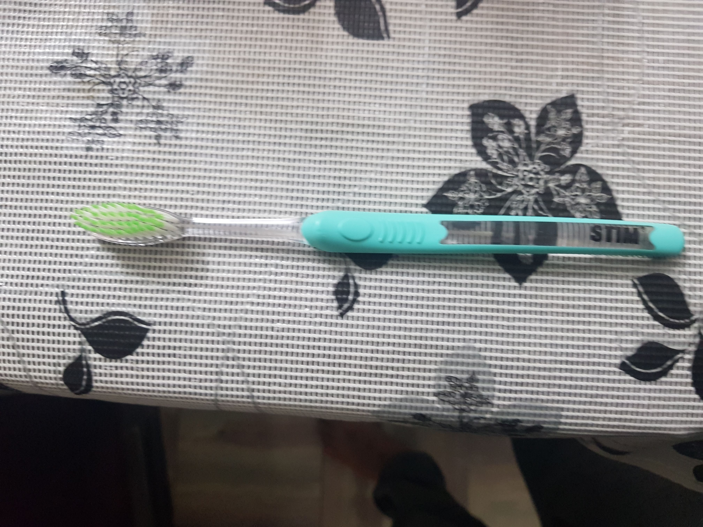
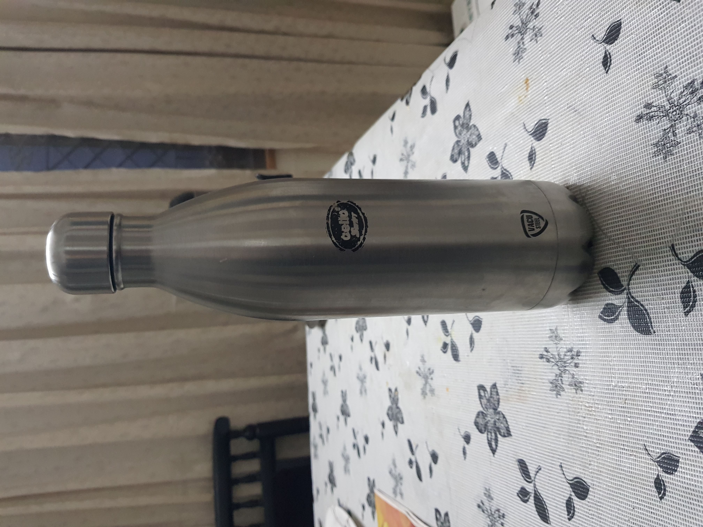
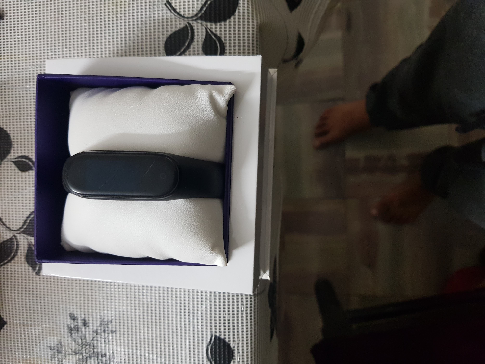
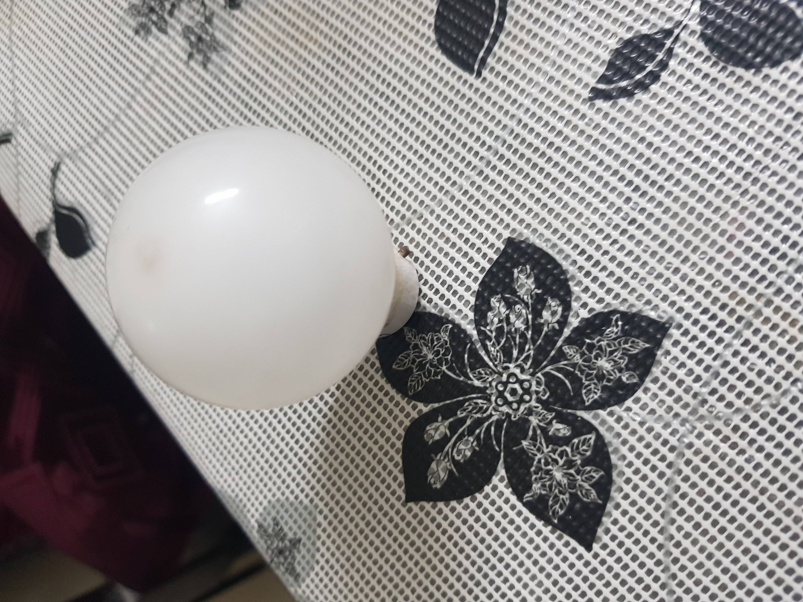
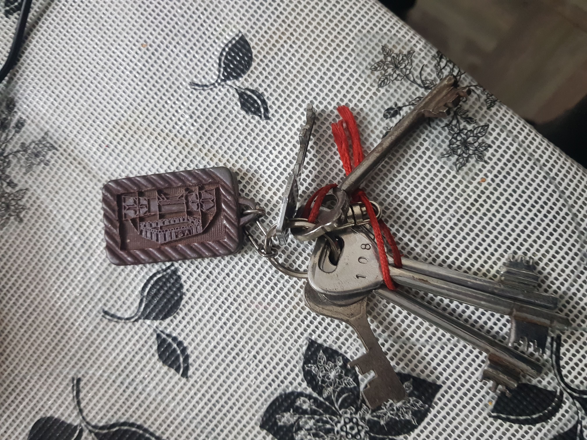

CASE STUDY BETWEEN GOOGLE LENS AND MOBILENET
GOOGLE LENS
VS
MOBILENET
- Test Image -  Output on Google Lens - Tooth Brush Output on Mobile Net - Spatula
- Test Image -  Output on Google Lens - Water Bottle Output on Mobile Net - Hair Dryer
- Test Image -  Output on Google Lens - Mobile Phone Output on Mobile Net - Xiaomi Mi Band 4
- Test Image -  Output on Google Lens - Paper Output on Mobile Net - Bulb
- Test Image -  Output on Google Lens - Keys Output on Mobile Net - Lighter
Result -
Google Lens Is More Accurate
Result -
Google Lens Is More Accurate
Result -
Mobilenet Model Is More Accurate
Result -
Mobilenet Model Is More Accurate
Result -
Google Lens Is More Accurate
I have tested 5 images
GOOGLE LENS
have predicted 3 of them more accurately.
and MOBILENET was less accurate
So according to my case study Google Lens is more accurate